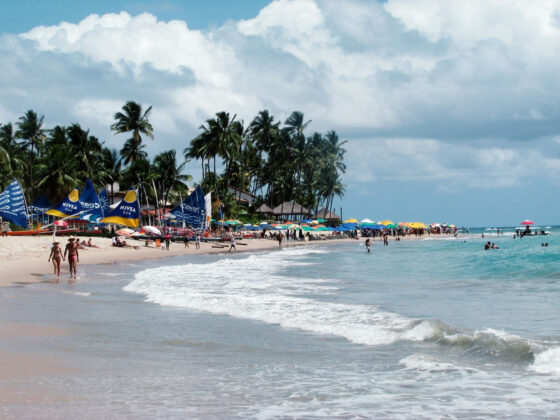

Espalhados pelos nove estados da região estão alguns dos mais famosos pontos turísticos do nosso
país.
É tanta cidade
bonita e lugares paradisíacos que provavelmente serão necessárias várias idas para conhecer os principais destinos
do
Nordeste!
Para te ajudar a pensar nas próximas viagens para o Nordeste, vamos citar alguns exewmplos, com os melhores destinos.
Com a chegada do inverno e as temperaturas baixas se espalhando pelo país, nada melhor do que planejar uma escapada para lugares onde o sol brilha intensamente o ano todo, mesmo nas férias de julho. A rede Carmel Resorts, situada no litoral cearense, oferece o refúgio perfeito para quem busca beleza natural, luxo e momentos de puro relaxamento. Com três destinos requisitados – Carmel Cumbuco Resort, Carmel Charme Resort e Carmel Taíba Exclusive Resort – a rede tem tudo o que é necessário para promover uma fuga memorável das baixas temperaturas. Localizado em Caucaia, o Carmel Cumbuco Resort é rodeado por dunas branquinhas, lagoas cristalinas e coqueirais. É um destino ideal para os amantes de esportes náuticos como kitesurf e windsurf, graças aos ventos favoráveis da região. Situado a apenas 40 minutos de Fortaleza, em uma pacata vila de pescadores na praia do Barro Preto, o Carmel Charme Resort oferece uma atmosfera de tranquilidade e exclusividade. Em São Gonçalo do Amarante, o Carmel Taíba Exclusive Resort se destaca por sua localização privilegiada sobre as falésias da praia do Taíba. Com jacuzzis, bar molhado, SPA, fitness center e restaurantes que servem comida típica da região, os resorts proporcionam uma experiência inesquecível de luxo descalço e sofisticação. Os três destinos convidam os hóspedes a aproveitar os municípios ensolarados do Ceará. Eles oferecem a combinação perfeita de infraestrutura sofisticada e a beleza natural incomparável das praias nordestinas. Seja para praticar esportes náuticos, relaxar em uma jacuzzi com vista para o mar ou degustar pratos deliciosos enquanto aprecia a paisagem, os hotéis Carmel Resorts garantem uma fuga de inverno repleta de momentos inesquecíveis.

Localizada no litoral de Pernambuco, é um dos destinos mais encantadores do Brasil. É famoso por suas piscinas naturais de águas cristalinas e mornas. Uma das principais atividades é o passeio de jangada até os recifes. No local, é possível nadar com peixes, observar os corais coloridos e apreciar as belezas subaquáticas. Além disso, as praias de Muro Alto e Maracaípe são imperdíveis. Elas oferecem desde águas calmas e ideais para famílias até ondas perfeitas para a prática de surfe. Outro ponto alto da visita é o passeio de buggy “ponta a ponta”, que proporciona uma visão completa das paisagens deslumbrantes da região. Além das belezas naturais, Porto de Galinhas oferece uma vibrante vida noturna e uma rica gastronomia local. À noite, o centro da vila se enche de vida com bares, restaurantes e lojas de artesanato. Há muitas opções para degustar pratos típicos à base de frutos do mar e conhecer a cultura pernambucana. Para os amantes do ecoturismo, a região ainda oferece trilhas e reservas ambientais. O destaque é o Projeto Hippocampus, que trabalha na preservação dos cavalos-marinhos.
